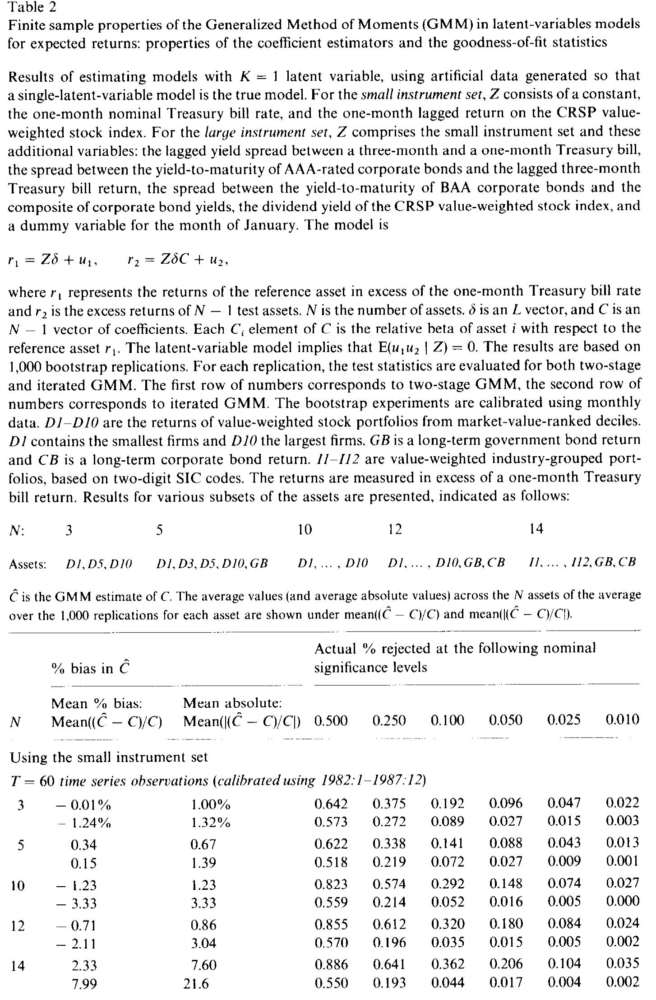
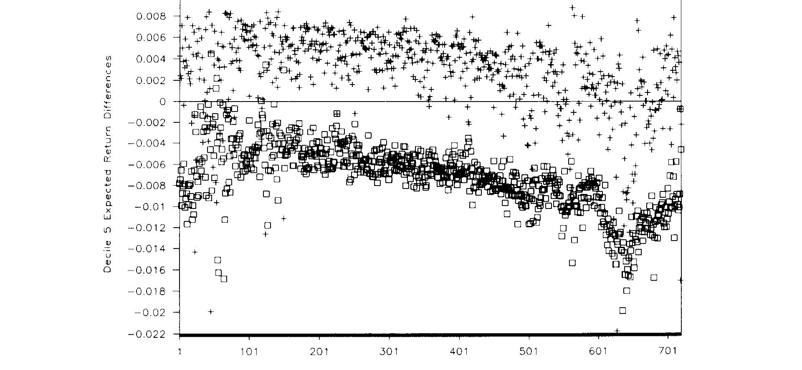
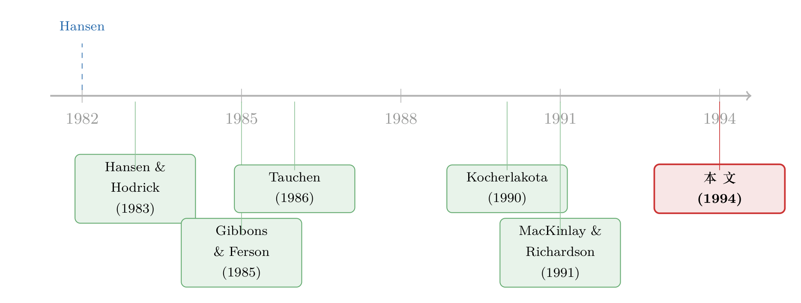

「拒绝」太多，还是「相信」太少：GMM 在小样本里的两副面孔
本文读的是 Ferson & Foerster (1994, Journal of Financial Economics)：当人们用 广义矩估计 (Generalized Method of Moments, GMM) 去检验条件资产定价模型时，最常用的「两阶段」做法在小样本里会过度拒绝模型（N=14、T=60 时，名义 10% 的检验实际拒绝了 36.2%），而「迭代」做法则拒绝得太少；系数本身大体无偏，但它的标准误被系统性低估。一句话：很多对潜变量模型的拒绝，可能根本不是模型错了，而是尺子歪了。
1 引言：一桩「先无罪、后定罪」的悬案
先讲一个让做实证资产定价的人坐立不安的故事。
1985 年，Gibbons 和 Ferson 写下了一个很漂亮的模型：他们假设有一个随时间变化的风险溢价（一个「潜变量」），就足以解释一篮子股票预期收益的全部可预测变化。然后他们去检验——没能拒绝。一个潜变量，似乎够了。
可是接下来几年，越来越多基于「大样本理论」的研究站出来说：不对，一个潜变量不够，得要两个、甚至更多。同一个假设，先被宣判无罪，又被陆续定罪。
问题在于，这些「定罪」全都建立在 GMM 检验统计量的渐近分布之上——也就是说，它们默认「样本足够大，卡方分布说了算」。但金融数据从来不是想要多少就有多少：你可能只有 60 个月的观测，却要同时给 14 只资产、3 到 8 个工具变量做联合估计。在这种「资产多、样本短」的格局里，渐近理论真的还靠得住吗？
这正是 Ferson 和 Foerster (1994) 要回答的问题。他们不去提出新模型，而是把矛头对准了检验工具本身：GMM 在有限样本里，到底会不会撒谎？
这是一篇典型的「方法论体检」论文。它的价值不在于发现某个新异象，而在于回过头去问：我们这些年得到的那些拒绝，有几分是真的？（关于「换一把尺子，结论就翻案」这件事在资产定价里有多普遍，可参见《正态分布早被否决，可我们的 CAPM 检验还在用它的尺子量天下》。）
2 模型：潜变量与那条「跨方程约束」
要看懂这场体检，得先看清被检验的到底是什么。
一类很广的 beta 定价模型——包括条件 CAPM、套利定价理论 (APT)，以及 Merton (1973)、Breeden (1979)、Cox-Ingersoll-Ross (1985) 这些跨期模型——都可以写成下面这个条件期望收益的形式：
$$ E(R_{it}\mid Z_{t-1}) = \lambda_0(Z_{t-1}) + \sum_{j=1}^{K} b_{ij}\,\lambda_j(Z_{t-1}), \quad i=0,\ldots,N,\; t=1,\ldots,T $$
这里 \(\lambda_j(Z_{t-1})\) 是第 \(j\) 个全市场风险溢价，\(b_{ij}\) 是资产 \(i\) 对第 \(j\) 个不可观测风险因子的条件 beta，\(Z_{t-1}\) 是定价时点可获得的信息（工具变量）。所谓潜变量模型 (latent variables model)，就是进一步假设 beta 是固定参数、而那些 \(\lambda_j(Z_{t-1})\) 才是随时间变化的「潜变量」。
接着，一个自然的处理是：把超额收益矩阵 \(r\) 拆成 \(K\) 个参照资产 (reference assets) \(r_1\) 和 \(N-K\) 个检验资产 (test assets) \(r_2\)。在固定 beta 的假设下，可以解出风险溢价并代回，得到一组干净的约束：
$$ E(r_2\mid Z) = E(r_1\mid Z)\,C $$
其中 \(C = \beta_1^{-1}\beta_2\) 是一个 \(K\times(N-K)\) 的矩阵。再假设参照资产的条件期望收益是工具变量的线性函数，整个体系就落到了下面这组「带约束的回归」上——这才是真正被 GMM 检验的对象：
这条约束的直觉很美：如果真有 \(K\) 个共同因子在驱动所有资产的可预测收益，那么只要用 \(K\) 个参照资产的回归函数做线性组合，就足以捕捉全部资产的可预测变动。 多出来的那部分自由度——\((N-K)(L-K)\)——就是模型可以被「证伪」的地方。检验，检验的就是这个 \(\delta_1\) 在两个方程里「长得一不一样」。
3 识别策略：GMM、两阶段 vs. 迭代，以及一个会撒谎的尺子
现在轮到方法本身。把误差矩阵 \(u=(u_1\ u_2)\) 与工具正交的条件 \(E(u'Z)=0\) 堆成一个长度为 \(NL\) 的向量 \(g_T\)，GMM 就是去找参数 \(\theta\)（即 \(\delta\) 和 \(C\) 的元素）最小化二次型：
$$ g_T'\,W\,g_T $$
其中权重矩阵 \(W\) 是正交条件协方差矩阵的一致估计的逆。Hansen (1982) 证明：在最优参数处，\(T\,g_T'\,W\,g_T\) 渐近服从卡方分布，自由度等于「正交条件数」减「参数个数」：
$$ NL - \big[\,KL + (N-K)K\,\big] = (N-K)(L-K) $$
但真正关键的一步，在于 \(W\) 怎么估。Hansen & Singleton (1982) 提出的做法是先用单位阵估一遍、得到初始参数，再用它构造 \(\hat W\)、代回去估第二遍——这就是两阶段 GMM (two-stage GMM)。而你也可以不停地用新参数更新 \(\hat W\)、反复迭代直到收敛——这就是迭代 GMM (iterated GMM)。两者渐近上完全等价，所以文献里通常只挑一个用，谁也没太在意选哪个。
Ferson 和 Foerster 的核心洞察，恰恰是这句「没太在意」里埋着雷。
他们还顺手处理了标准误的问题。Hansen (1982) 给出的渐近方差在小样本里偏小，于是他们借用了极大似然里常见的偏误修正（类似 Hinkley, 1977），考察两种放大因子：传统的
$$ \frac{T}{T-P}, \qquad P = KL + (N-K)K $$
和一个更激进的替代方案
$$ \frac{(N+L)T}{(N+L)T - Q}, \qquad Q = P + \frac{(NL)^2 + NL}{2} $$
后者把工具与资产共同提供的「有效观测数」、以及权重矩阵里要估的元素个数都算了进去。
怎么造「假样本」？
要研究有限样本性质，得有大量「已知真相」的样本。这里他们没有去校准一个完整的人工经济（像 Tauchen 那样用离散状态逼近），而是用了更接近 自助法 (bootstrap, Efron 1982) 的重抽样思路：保留真实数据里工具变量的自相关与截面相关结构，对误差项 \(\{u_{jt}\}\) 做有放回的随机重抽样——这样既保住了资产间的协方差结构，又斩断了误差与 \(Z_{t-1}\) 的联系，从而让人工数据严格满足 \(E(u_t\mid Z_{t-1})=0\)，即单潜变量模型为真。
但这里有个绕不开的张力：你怎么知道你的模拟器本身不撒谎？ 于是他们先做了一个「体检的体检」：取 \(N=12\)、\(T=60\)，用正态随机数生成 5,000 个样本，得到一个理想化的「真实」抽样分布；再从中随机抽 5 个样本，各自跑 1,000 次自助法，看能不能还原出那个真分布。结果大体能还原——迭代 GMM 的吻合度明显好于两阶段——但第 3、4 号实验里，自助法的 p 值与真分布出现了显著偏离。这提醒我们：下文的结论，作者也用传统蒙特卡洛交叉验证过，不是孤证。
4 主要结果：一个「过度拒绝」，一个「过度宽容」
故事的反转，就在这里。
先看系数。 好消息是，GMM 的系数估计在简单模型里大体无偏。当 \(T=720\) 时偏误极小；即便缩到 \(T=60\)，用小工具集、3 到 12 只资产时，平均偏误不超过真值的 3.4%。只有当资产数爬到 \(N=14\)，偏误才开始变得扎眼——两阶段的平均偏误 2.33%、迭代的高达 7.99%，平均绝对偏误更是分别到 7.60% 和 21.6%。换句话说：资产越多、样本越短，系数越不可靠。
真正的问题出在拟合优度检验上。 在 \(T=60\)、小工具集下，名义 10% 显著性水平的拒绝频率本该是 10%，可两阶段 GMM 的实际拒绝率：
- \(N=3\) 时是 19.2%（已经快两倍了）；
- \(N=14\) 时飙到 36.2%。
也就是说，资产一多，两阶段 GMM 就像一个神经过敏的法官，把大量本来无辜的模型判了死刑。而迭代 GMM 恰好相反——它拒绝得太少，而且资产越多越「宽容」。一个过度定罪，一个过度纵容。妙的是，在很多 \(T=60\) 的实验里，正确的拒绝频率恰好被这两个统计量「夹」在中间。

Table 2
回到开头那桩悬案：当年那些「拒绝单潜变量」的研究，若用的是两阶段 GMM、又恰好资产多样本短，那么它们的拒绝里，有相当一部分很可能是这台尺子自己制造出来的幻觉。Gibbons-Ferson 当年的「无罪」，未必判错了。
标准误也在撒谎。 渐近公式给出的标准误系统性偏小，意味着 t 值被夸大、参数显得比实际更「显著」。这一低估在「资产多、样本小」的体系里更严重。那两个放大因子能部分纠偏，但只是「部分成功」——在更复杂的模型里，系数和标准误可能一起失真到无法使用的地步。
5 检验的「功力」：它能识破什么样的错？
一个检验光「大小」（size，即犯第一类错误的概率）正确还不够，还得有「功力」（power，即识破错误模型的能力）。Ferson 和 Foerster 于是问：当真实世界不是单潜变量时，这个检验有多大把握能拒绝它？
他们设了两个备择假设：
- 两溢价、固定 beta 模型（两个时变风险溢价）；
- 条件 CAPM、时变 beta 模型（市场 beta 随时间变化）。
结论相当微妙：检验对第一种备择的功力较高，对第二种——时变 beta 的条件 CAPM——功力却很低。
这件事的含义远比它看起来重要。它说明：现有这套潜变量检验，几乎分辨不出 beta 到底是不是常数。你拿一个固定 beta 的单潜变量模型去拟合一个其实 beta 在动的世界，检验大概率会「视而不见」。换句话说，「没能拒绝单潜变量」这件事，绝不等于「beta 真的是常数」——检验只是没那个本事看出来而已。（关于时变 beta 被长期忽视、以及它如何吞掉一部分被误读为「异象」的收益，可参见《时变的 beta，被低估了二十年的风险》 与《会「看天」的 beta：当风险收编了价值与规模》。）

Figure 4: Differences in expected returns under two alternative models. The squares represent the
6 数据
为了让实验贴近文献里真实的潜变量研究，作者用的是 CRSP 提供的月度数据：
- 资产：10 个按市值排序的 NYSE 规模组合（
D1最小到D10最大）、12 个按两位 SIC 码分的行业组合，外加一个长期公司债和一个长期政府债组合（Ibbotson 数据），全部以一月期美国国债利率计的超额收益。 - 工具变量：「小工具集」含常数、一月期国债利率、滞后的 CRSP 价值加权市场收益（\(L=3\)，恰好够两潜变量模型过度识别）；「大工具集」再加上期限利差、AAA 与 BAA 公司债利差、股息率、一月虚拟变量（\(L=8\)）。
- 维度扫描：\(T\) 从 60 到 720，\(N\) 从 3 到 14，\(K=1\)（重点）和 \(K=2\)。
注意一个巧思：市场组合（CRSP 价值加权指数）被用来生成数据，却假装计量经济学家观测不到它——这正是潜变量模型的精髓：市场组合不可观测，只能用一篮子资产去「逼」出潜在溢价。
7 文献脉络
这条线的源头是 Hansen (1982) 的 GMM——它因为简单、灵活、普适（尤其能处理条件异方差），迅速成了资产定价实证的主力工具。紧接着 Hansen & Singleton (1982) 给出了可操作的两步实现，Hansen & Hodrick (1983) 与 Gibbons & Ferson (1985) 则最早把这套跨方程约束解读成潜变量资产定价模型——后者那个「不拒绝单潜变量」的结论，正是本文要回头追问的起点。
与此同时，另一支「有限样本怀疑论」在悄悄生长：Tauchen (1986)、Kocherlakota (1990)、Mao (1991) 检验了消费型模型里 GMM 的小样本表现，MacKinlay & Richardson (1991) 用 GMM 检验均值-方差有效性，Nelson & Startz (1990) 则警告「弱工具」会让 IV 的 t 统计量失真。本文站在这两支的交汇处：它专攻潜变量模型所特有的「非线性跨方程约束」这一情形——前人都没覆盖到——并第一次系统地把「两阶段 vs. 迭代」的差异摆上台面。

评论与延伸（Q&A + 研究方向）
(a) 几个可能的疑问
Q：既然两阶段和迭代渐近等价，为什么小样本里差这么多？
因为两者对权重矩阵 \(W\) 的处理不同。两阶段只更新一次 \(\hat W\)，而 \(\hat W\) 在小样本里估得很糙，这种噪声会被二次型 \(g_T'Wg_T\) 放大成「过度拒绝」；迭代不断更新直到收敛，相当于让参数与权重相互「磨合」，反而让统计量更贴近卡方分布——代价是它矫枉过正、拒绝得太少。渐近时 \(\hat W\) 收敛到真值，差异自然消失。
Q：系数都「近似无偏」了，为什么还说不可靠？
无偏说的是点估计的位置对，可靠说的是你对它的不确定性判断对。本文的要害正在于：标准误被系统性低估，于是 t 值虚高、置信区间虚窄。一个位置正确但「自信过头」的估计，照样会让你做出错误的拒绝或接受。
Q：用自助法造数据，会不会本身就有偏？
这正是作者用 Table 1 那个「体检的体检」想堵住的漏洞。多数情形下自助法能还原理想真分布，但第 3、4 号实验出现了显著偏离——所以他们又用传统蒙特卡洛交叉验证。诚实地说，模拟方法学本身在「N 大 T 小」时也会变脆，这是这类研究无法完全消除的元层级风险。
Q：那是不是说之前所有「拒绝单潜变量」的论文都错了？
不能这么武断。本文说的是：用两阶段 GMM、且资产多样本短时，拒绝里掺了水分。若某篇研究用的是迭代 GMM、或样本足够长（\(T=720\) 时偏误就很小了），结论仍可能站得住。它提供的是一份「该重新审视哪些情形」的清单，而非一笔勾销。
Q：为什么检验对「时变 beta」几乎没有功力？
因为单潜变量约束 \(E(r_2\mid Z)=E(r_1\mid Z)C\) 里那个 \(C\) 被设成常数矩阵，而时变 beta 带来的偏离恰好可以被「重新校准的潜在溢价」吸收掉相当一部分——两种设定在可预测收益的截面结构上长得太像，检验难以区分。相比之下，加一个独立的第二溢价会改变截面的秩，更容易被识破。
Q：这对今天用 GMM 的人还有意义吗？
有，而且是结构性的。只要你在「矩条件数远多于样本」的格局里用最优 GMM——这在因子动物园、公司债截面、外资持仓面板里比比皆是——两阶段过度拒绝、标准误低估的毛病就会复活。现代的常用对策是迭代 GMM、连续更新估计 (CUE)，或干脆退回不依赖 \(\hat W\) 求逆的等权 GMM。
(b) 几个可能的研究问题与提案
-
把这套体检搬到公司债截面。 【经济故事】公司债定价里同样大量使用「资产多、样本短」的条件模型（信用利差对宏观工具的预测回归），而债券收益的厚尾与流动性诱导的自相关比股票更严重，两阶段 GMM 的过度拒绝很可能更夸张。 【可行性】高。数据用 TRACE + Compustat，识别上直接复刻本文的重抽样框架，只需把误差结构换成保留债券特有的截面相关与序列相关。难点是流动性导致的「假自相关」要小心剥离。
-
外资持仓面板里的弱工具问题。 【经济故事】研究外资持有人对收益/流动性的影响时，常用「可投资度」「指数纳入」之类做工具，这些工具往往很弱——Nelson & Startz (1990) 警告过的 t 统计量失真，会和本文的小样本过度拒绝叠加。 【可行性】中。需要一国级别的外资持仓面板（如韩国、台湾的可投资度数据）。识别上可做一次「双重诊断」：同时报告弱工具检验与有限样本校正后的拒绝频率，看既有结论有多少经得起两重折扣。
-
流动性因子检验中的两阶段 vs. 迭代敏感性。 【经济故事】流动性因子（如 Pástor-Stambaugh 类）的定价检验高度依赖 GMM 权重矩阵，而流动性数据的条件异方差极强——本文说的正是 GMM「能处理异方差，但小样本里反被异方差咬一口」。 【可行性】高。纯方法学复现：拿现成的流动性因子数据，分别用两阶段、迭代、CUE 跑同一组检验，报告拒绝频率随 \(N\)、\(T\) 的变化曲线。doable 且贡献明确。
-
为「时变 beta」设计一个有功力的检验。 【经济故事】本文最尖锐的发现是现有检验看不出 beta 在不在动。能不能构造一个显式针对时变 beta 的矩条件（例如让 \(C\) 随工具变量线性变化），把功力补上？ 【可行性】中。理论上不难写出 \(C(Z_{t-1})\) 的扩展模型，难在过度识别的自由度会迅速消耗、小样本性质可能更差——需要先用本文的模拟框架确认新检验的 size 是否可控，再谈 power。
我的判断
这篇论文的贡献是诊断性的，但分量很重。它在一个被广泛使用、却被默认「随便选一种实现都行」的工具上，钉下了一根结实的警示桩：两阶段与迭代 GMM 在小样本里不是一回事，前者过度拒绝、后者过度宽容，而「真相往往被夹在两者之间」——这本身就是一条极具操作性的实用建议（同时报告两个统计量）。它对标准误低估的提醒，以及对「检验无力识别时变 beta」的发现，至今仍切中要害。
对识别的担忧主要有两点。其一，整套结论建立在重抽样模拟之上，而作者自己的 Table 1 就显示这台模拟器在「N 大 T 小」时会偶尔失准——结论的可信度因此与模拟方法的可信度绑定，是一种无法完全消除的循环依赖。其二，实验设计虽覆盖了 \(N\) 到 14、\(T\) 到 720，但都基于美国月度股债数据的协方差结构；换到尾部更厚、相关性更强的市场（如公司债、新兴市场、外汇），过度拒绝的量级是否会更大，本文没有也无法回答。
我接下来最想看到的，是把这套体检直接搬进现代高维定价检验——当矩条件数动辄成百上千、而最优 GMM 要对一个巨大的 \(\hat W\) 求逆时，本文揭示的病症几乎注定会以更狰狞的形态复发。哪一类收缩或正则化能真正治本，而不只是把过度拒绝换成过度宽容，是个值得认真做的题目。（这条「给定价模型的尺子本身做体检」的思路，与后来 Hansen-Jagannathan 距离的工作一脉相承，可参见《一把丈量所有定价模型的尺子——HJ 距离》。）
参考文献
Breeden, D. T. (1979). An intertemporal asset pricing model with stochastic consumption and investment opportunities. Journal of Financial Economics 7, 265–296.
Cox, J. C., Ingersoll, J. E., & Ross, S. A. (1985). A theory of the term structure of interest rates. Econometrica 53, 385–408.
Efron, B. (1982). The Jackknife, the Bootstrap, and Other Resampling Plans. Society for Industrial and Applied Mathematics, Philadelphia.
Ferson, W. E., & Foerster, S. R. (1994). Finite sample properties of the generalized method of moments in tests of conditional asset pricing models. Journal of Financial Economics 36(1), 29–55.
Ferson, W. E., Foerster, S. R., & Keim, D. B. (1993). General tests of latent variable models and mean-variance spanning. Journal of Finance 48, 131–156.
Gibbons, M. R., & Ferson, W. E. (1985). Testing asset pricing models with changing expectations and an unobservable market portfolio. Journal of Financial Economics 14, 217–236.
Hansen, L. P. (1982). Large sample properties of generalized method of moments estimators. Econometrica 50, 1029–1054.
Hansen, L. P., & Hodrick, R. J. (1983). Risk averse speculation in the forward foreign exchange market. In J. Frenkel (ed.), Exchange Rates and International Macroeconomics. University of Chicago Press.
Hansen, L. P., & Singleton, K. (1982). Generalized instrumental variables estimation of nonlinear rational expectations models. Econometrica 50, 1269–1285.
Hinkley, D. V. (1977). Jackknifing in unbalanced situations. Technometrics 19, 285–292.
Kocherlakota, N. (1990). On tests of representative consumer asset pricing models. Journal of Monetary Economics 26, 285–304.
MacKinlay, A. C., & Richardson, M. P. (1991). Using the generalized method of moments to test mean-variance efficiency. Journal of Finance 46, 511–528.
Merton, R. C. (1973). An intertemporal capital asset pricing model. Econometrica 41, 867–887.
Nelson, C. R., & Startz, R. (1990). The distribution of the instrumental variables estimator and its t-statistic when the instrument is a poor one. Journal of Business 63, 125–140.
Tauchen, G. (1986). Statistical properties of generalized method-of-moments estimators of structural parameters obtained from financial market data. Journal of Business and Economic Statistics 4, 397–425.